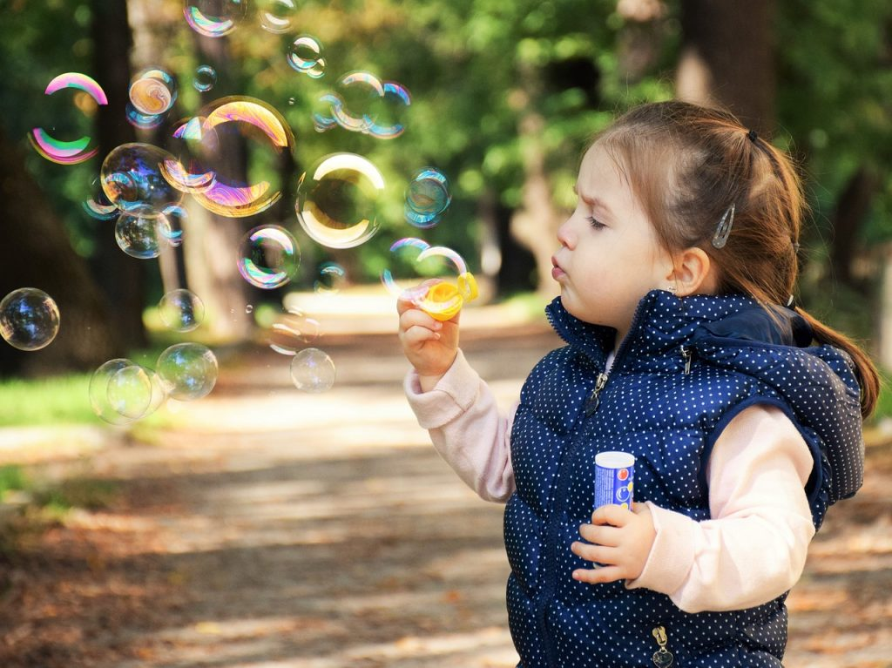

ကလေးတွေရဲ့ ဖွံ့ဖြိုးမှုကို လေ့လာတဲ့ သုတေသန ပညာရှင်တွေရဲ့ အဆိုအရ ကလေးရဲ့ ဉာဏ်ရည်၊ ပေါင်းသင်းဆက်ဆံမှုစွမ်းရည်နဲ့ စိတ်ခံစားမှုကို ထိန်းချုပ်တဲ့ စွမ်းရည်တွေ တိုးတက်လာစေဖို့ဆိုရင် ကစားတဲ့ ကစားနည်းတွေဟာ အောက်ပါအချက်နဲ့ ပြည့်စုံဖို့ လိုပါတယ်တဲ့။ အဲ့ဒါတွေကတော့
- မိဘက အတင်းဖိအားပေး ကစားခိုင်းတဲ့ ကစားနည်းမျိုး မဟုတ်ပဲ ကလေးကိုယ်တိုင်က လိုလိုချင်ချင် ကစားချင်တဲ့ ကစားနည်းမျိုး ဖြစ်ရပါ့မယ်။
- ကစားတဲ့အခါ ကလေးကို ပျော်ရွှင်မှု ဖြစ်စေရပါ့မယ်။ ပျင်းရိညည်းငွေ့ဖွယ် ကစားနည်းမျိုး မဖြစ်စေရပါဘူး။
- ကစားနည်းဟာ ကလေးရဲ့ စိတ်အာရုံကို ကြာရှည်စွဲဆောင်နိုင်တဲ့ ကစားနည်းမျိုး ဖြစ်ရပါမယ်။
- ပုံမှန်နေ့တဒူဝ အဖြစ်အပျက်တွေကနေ သွေဖယ်တဲ့ ကစားနည်းမျိုး (စိတ်အာရုံကွန့်မြူးပြီး ကစားရတဲ့ ကစားနည်းမျိုး၊ ဥပမာ – အာကသထဲ ခရီးသွားတာမျိုး)
ဘယ်လိုကစားနည်းမျိုးတွေက အထက်ပါအချက်တွေကို ဖြည့်ဆည်းပေးမလဲ
အောက်ပါကစားနည်းတွေဟာ ကလေးရဲ့ ဉာဏ်ရည်၊ ပေါင်းသင်းဆက်ဆံမှုစွမ်းရည်နဲ့ စိတ်ခံစားမှုကို ထိန်းချုပ်တဲ့ စွမ်းရည်တွေကို တိုးတက်မြင့်မား လာစေပါတယ်တဲ့။- စိတ်အာရုံကွန်းမြူးစေတဲ့၊ စဉ်းစားတွေးတောရတဲ့၊ စိတ်ကူးယာဉ်ရတဲ့ ကစားနည်းမျိုးတွေ၊ ဥပမာ – ပုံဆွဲတာ၊ သဲအိမ်ဆောက်တာ၊ ကခုန်တာ၊ စတာတွေဟာ ကလေးရဲ့ တီထွင်ဖန်တီးနိုင်စွမ်း ကိုအားပေးပါတယ်။
- ဘလောက်တုန်းတွေ၊ ကတ်ထူပြားတွေနဲ့ အိမ်ဆောက်တမ်း ကစားတာ။ ဒီကစားနည်းတွေဟာ ကလေးရဲ့ လက်တွေထိန်းချုပ်စွမ်းအားကို တိုးတက်လာစေတဲ့ အပြင်၊ စိတ်ရှည်မှု၊ စိတ်ခံစားမှုကို ထိန်းချုပ်နိုင်မှုနဲ့ တီထွင်ဖန်တီးမှုတွေကို တိုးတက်စေပါတယ်။
- ပြေးလွှားခုန်ပေါက်ကစားရတဲ့ ကစားနည်းတွေဟာ ကလေးရဲ့ ကာယဖွံ့ဖြိုးမှုကို အားပေးပါတယ်။ ဦးဏှောက်ကို သွေးသွားတာ များလာတဲ့အတွက် ဦးဏှောက်ရဲ့ ဖွံ့ဖြိုးမှုကိုလဲ အားပေးပါတယ်။
- ဟန်လုပ်ရတဲ့ ကစားနည်းတွေ။ ဥပမာ ဆူပါဟီးရိုးတွေလို ဟန်လုပ် သရုပ်ဆောင်တာ၊ ကာတွန်းဇါတ်ကောင်တွေလို ဟန်လုပ် သရုပ်ဆောင်တာမျိုးတွေဟာ ကလေးရဲ့ စဉ်းစားတွေးခေါ်နိုင်စွမ်း၊ စိတ်အာရုံထိန်းချုပ်နိုင်စွမ်းတွေနဲ့ အများနဲ့ အတူတကွ ပူးပေါင်းဆောင်ရွက်နိုင်စွမ်း၊ လူအများနဲ့ ဆက်ဆံမှုစွမ်းရည် အစရှိတာတွေကို တိုးတက်စေပါတယ်။
